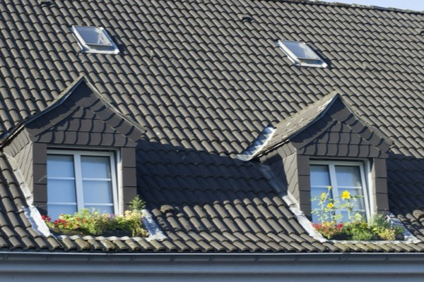

Ratgeber
Bauen im Bestand, verständlich erklärt.
Was im Saarland und in der Pfalz gilt, bevor Sie kaufen, umbauen oder vermieten. Mit echten Zahlen und Fällen aus unserer Arbeit.

Zweiter Rettungsweg im Dachgeschoss: Wann das Fenster reicht und wann nicht

Gewerbe zu Wohnraum: Bis zu 30.000 Euro Zuschuss je Wohnung, aber nur noch 2026

„Dachaufbauten sind unzulässig“: Wann Sie trotzdem eine Gaube bekommen können
Die Beiträge geben einen allgemeinen Überblick und ersetzen keine Rechtsberatung. Jeder Fall ist anders. Stand Oktober 2026.